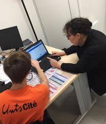

Octobre 2024 - Juillet 2025
D’octobre 2023 à juillet 2024, j’ai effectué un Service Civique au sein de l’association UNIS-CITÉ à Avignon. Mon rôle consistait à accompagner des personnes en situation de précarité numérique dans le cadre du programme “Les Connectés”.
J’ai animé des ateliers d’initiation aux outils numériques (smartphones, ordinateurs, démarches en ligne), tout en assurant un accompagnement individuel adapté au niveau de chaque bénéficiaire. En parallèle, j’ai participé à des actions de sensibilisation sur la cybersécurité et les bonnes pratiques en ligne.
Cette mission m’a permis de développer mes compétences relationnelles, mon sens de la pédagogie, ainsi qu’une solide capacité à vulgariser des notions techniques pour un public varié.
Aide à la personne, outils numériques, adaptabilité , pédagogie